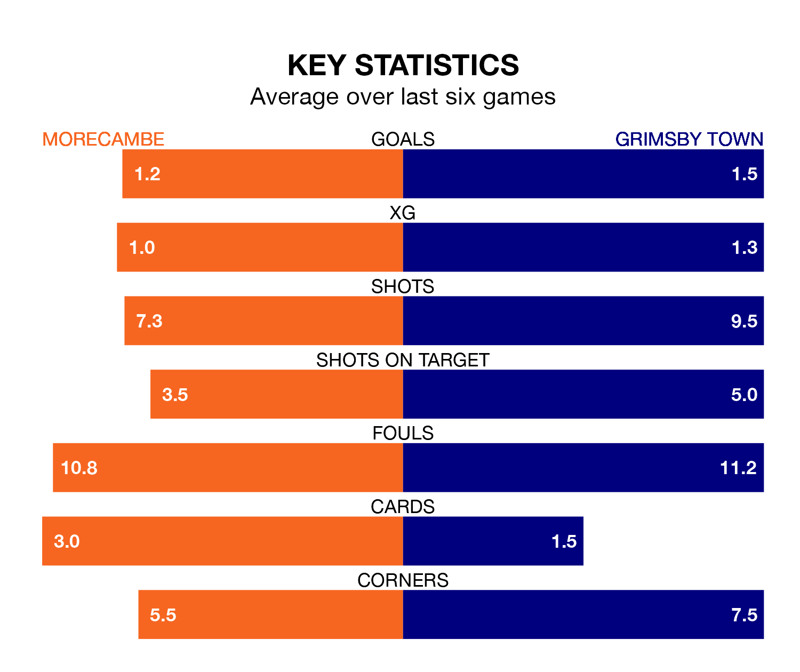

Grimsby Town come to the Mazuma Stadium to play Morecambe on Saturday in terrible form, having collected just two points from their last six games.
The visitors have drawn two and lost four of their last six fixtures, while the Shrimps have three wins and a draw.
Grimsby are 22nd in the table after 31 games, of which they have won six and drawn 11, earning 29 points.
Morecambe are 11 places ahead of Town in 11th, with 13 wins and eight draws putting them on 47 points.
In the last 10 years, Morecambe and Grimsby have played each other on 12 occasions. Morecambe won five of them, Grimsby four, and they drew three times.
On average, the Shrimps scored 1.3 goals and the Mariners 1.1 in those matches.
Their last meeting was on November 11, when Grimsby won 3-2 at home.
With 43 goals in 31 games so far this season, the Mariners are scoring at below the league average rate with 1.4 goals per game. And they are conceding more than average, letting in 59 goals at a rate of 1.9 per game.
The Shrimps, meanwhile, are average scorers, with 1.5 goals per game. They have conceded 1.6 goals per game.
Morecambe's last match was on Tuesday, a 3-0 loss against Walsall.
Grimsby lost 5-1 against Doncaster Rovers last time out, on February 17, with Danny Rose on the scoresheet.
Updated: 10:08 (UTC), 23/02/24